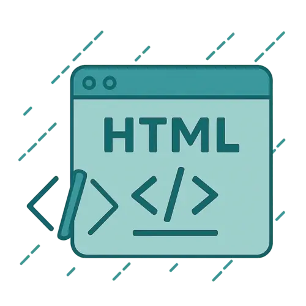
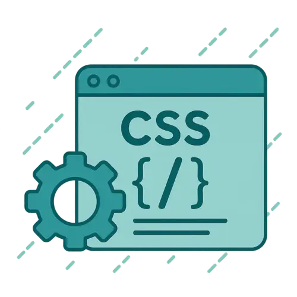
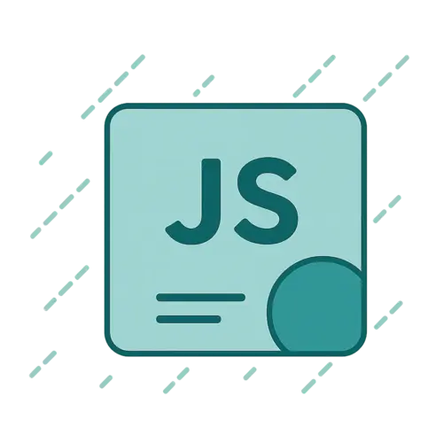

Développeur web et web mobile
Construire aujourd’hui les solutions numériques de demain.
Maria Romanchyk
En reconversion vers le développement web, je suis actuellement en formation professionnelle « Développeur Web et Web mobile » chez Sud Management. Curieuse, rigoureuse et passionnée par le code, je développe des compétences solides en HTML, CSS, JavaScript, ainsi qu’en développement front-end et back-end. J’aime relever des défis techniques, apprendre en continu et travailler sur des projets concrets qui ont du sens. Mon objectif est de construire des solutions web claires, accessibles et bien structurées, tout en évoluant dans un environnement collaboratif et stimulant.
Mes compétences
-

HTML
-

CSS
-

Java Script
Mes projets
The green escape
Site web
The Green Escape est une jeune entreprise française spécialisée dans l'écotourisme, née de la passion commune de deux amis pour la nature, le confort minimaliste et les modes de vie durables. Basée au coeur du Périgord Vert, notre mission est simple : offrir une échappée belle et verte à toutes celles et ceux qui souhaitent déconnecter du quotidien, renouer avec l’essentiel et se ressourcer dans un cadre naturel préservé.
Les mains dans le cambouis
Site web
Les Mains dans le Cambouis, c’est un garage coopératif où chacun·e peut louer un emplacement équipé et utiliser du matériel professionnel pour travailler sur son propre véhicule. Que vous soyez débutant·e ou passionné·e de mécanique, vous trouverez ici les outils, les conseils et l’ambiance idéale pour apprendre et progresser à votre rythme.